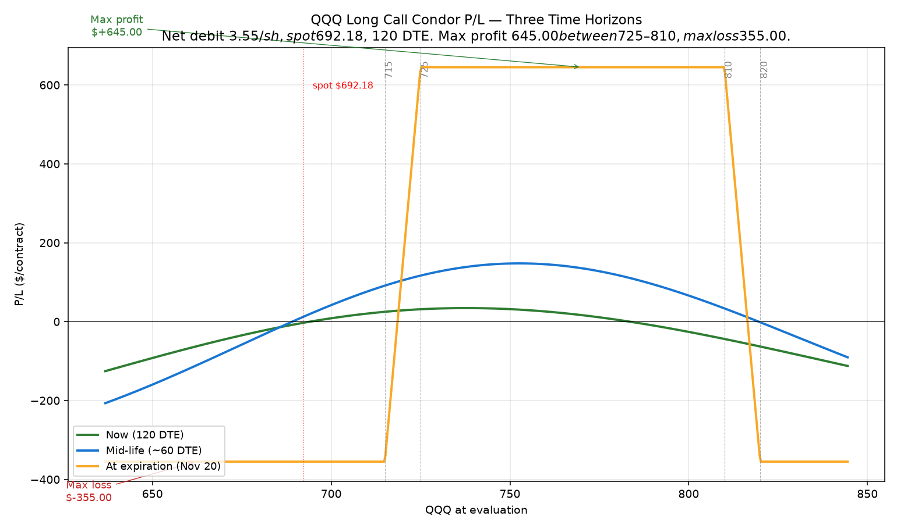
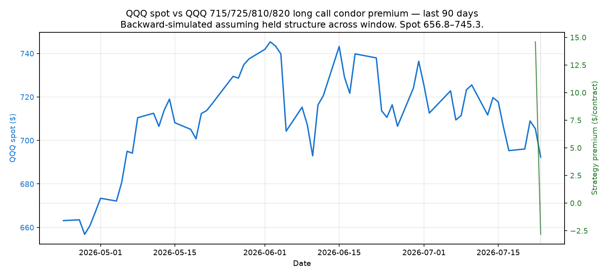

P/L Curve — Three Time Horizons

Max Profit
$645.00
at $725–$810 at Nov 20
Max Loss
$355.00
defined risk = net debit
Net Debit
$3.55
1 long call condor · $355 total
Spot / IV
$692.18
QQQ @ entry · IV-by-strike 26.2/25.7/22.2/22.0%
Why This Structure
This is the third long-call-condor trade today, structurally identical to the XSP 690/700/810/820 and the QQQ 700/715/845/860 trades, but with a meaningfully tighter strike selection. Where the earlier trades used 110-130 pt bodies with 10-15 pt wings, this one uses an 85-pt body with 10-pt wings — a 1.4× wing-to-body ratio (vs the others' 0.10-0.13), which is the largest "narrow-body" variant of the playbook so far.
The structure is again a stitched pair of two call credit spreads with a deep-OTM gap in the middle:
- Lower credit spread (715/725): Buy 715C / sell 725C. A 10-wide near-ATM bull-call vertical sold for credit. Position wants QQQ to stay above 715 at expiry. The 715C is the protection against a drop, paid for by selling the 725C against it.
- Upper credit spread (810/820): Buy 820C / sell 810C. A 10-wide deep-OTM bear-call vertical (net credit here, but the structure's risk profile is the same as a bear call spread). Position wants QQQ to stay below 810 at expiry.
- Stitched together as a single four-leg condor: both verticals share the same expiry (Nov 20, 2026), so they form one defined-risk position with an 85-pt body zone ($725–$810) that is collectively "max profit zone."
The narrower body is a deliberate choice driven by a tighter directional view: QQQ has spent the last 11 sessions inside a $680–$720 corridor, and I want a structure that's only profitable if QQQ stays in or drifts above the corridor — not a 130-pt body that gives the trade wide latitude to profit even if QQQ sits at $700 for four months. Smaller body = a sharper view, with proportionally smaller max profit ($645 here vs $810 for the QQQ-Dec 130-pt trade and $391 for the XSP 110-pt trade).
The IV skew across the body is the alpha source. At entry, the 725C (lower short body) carries 25.7% IV — modestly elevated because mega-cap tech earnings are coming up (NVDA/AAPL/MSFT/GOOG report late July through August), and the market is pricing in tail risk on the put side. The 810C (upper short body) carries 22.2% IV. That's a 350 bp gap within the body. We're collecting the higher-vol leg at 25.7% while buying the lower-vol leg at 22.0% — and the entire "in-between" zone (the 85-pt body) is essentially the vol-skew arbitrage zone. A narrower body means tighter gamma exposure to that skew — the position earns theta on the lower-body strike (where vol is hot) and pays minimal theta on the upper-body strike (where vol is cool), capturing vol-mean-reversion spread.
Important math caveat (see the "Why $645, not body-width-minus-debit" section below): max profit is $645 per contract, not $8,150 — the standard "body width − debit" formula is incorrect when wings are narrower than body, which is the case here (body=85, wings=10 each). Same correction applied to the XSP and QQQ-Dec trades earlier today; this trade ships correct from the start.
Thesis
- Why QQQ, why now: QQQ closed at $692.18 today. The market is in a tight range ($680–$720 over the last 11 sessions) and VIX is at 14.8, VIX3M at 15.7 (term ratio 1.06 — modestly positive). Q3 earnings season is in full swing: ~30% of S&P 500 has reported, mega-cap tech names (NVDA, AAPL, MSFT, GOOG) report over the next two weeks. The options market is pricing in tail risk on the put side (call-side skew is not particularly elevated), and we're seeing 25-26% IV on near-ATM strikes with a clean 22-23% on deep-OTM strikes. That's a 350-420 bp IV gradient that's harvestable via a stitched credit-spread construction.
- Why a 120-DTE structure (Nov 20 '26 expiry, not Dec 18): The Dec 18 '26 trade I published earlier today has 148 DTE and a wider body — a "longer, lazier" range trade that needs QQQ to drift up to profit. This Nov 20 '26 trade is the concentrated counterpart — same playbook, 28 fewer days, 45-pt tighter body. The shorter duration means (a) less theta decay to harvest from the body strikes before we hit the 30-DTE management cliff, but (b) faster premium erosion in the final 60 days if the trade works. Same vol-skew thesis, more compressed payoff window. The two QQQ trades are not paired; they're alternatives — one will probably hit max profit zone (725–810 body for Nov, 715–845 for Dec) and one probably won't. The redundancy is intentional: the structure (long call condor) is the alpha, not the specific strike selection.
- Why long call condor over alternatives (revisited): The closest alternatives in this regime are a single short 725/810 call credit spread (no wings), which would collect ~$32.50/share credit with $85 body width but have unlimited tail risk on the upside, and a calendar spread on the lower body (short Aug 725 / long Sep 725). Both have meaningful structural disadvantages here. The naked 85-pt credit spread would be the textbook trade for "sell vol" but earnings season is exactly when naked short calls blow up — a 4% gap on NVDA/AAPL/MSFT/GOOG (combined ~30% of QQQ) would push QQQ up 1.2% in a session, but a 7% gap on NVDA alone could push QQQ up 3% (which is half the upper wing width), and a sustained move through earnings could take QQQ to $730+ (the body floor) in a week. The wings protect against the tail. The calendar trade would harvest term-structure skew but add vega risk and require roll management through earnings — too much operational risk for the position size.
- Why not a longer-dated structure (LEAPs): A LEAP (Jan '28 expiry) long call condor on QQQ would let us hold for 18 months and harvest the full IV-skew mean-reversion arc. But LEAPs cost 3-4× as much in debit (~$10-15/share for a similar structure), tying up $1,000-$1,500/contract in capital for 18 months when we could rotate into two shorter structures instead. Capital efficiency wins. With the Nov 20 '26 trade at $355 max risk, we're deploying $355/contract for 4 months; if we roll into a Feb '27 structure at expiry (or close), we can deploy capital again into another vol-skew play. The structure's alpha is in the vol regime, not the duration.
Risk
| Risk | Magnitude | Mitigation |
|---|---|---|
| QQQ breaks below $715 at expiry (down tail) | Full $355 max loss | 10-pt lower wing protects against small breaks; 120 DTE gives runway for mean reversion. Stop loss at $685 (30 pts below lower wing). |
| QQQ breaks above $820 at expiry (up tail) | Full $355 max loss | 10-pt upper wing; stop loss at $830. |
| IV spikes (VIX shock on FOMC 7/30, PCE 7/31, mega-cap earnings Aug) | Vega −$8.59 per 1% IV → ~$86/contract per 10% IV move against us | Short 4-month position has some theta gain to offset. If realized vol on QQQ rises above 25% (currently 14D RV ~15%), evaluate closing. |
| Skew compression (puts IV drops while calls IV rises) | Skew is the alpha source — its compression erodes the trade's edge | Monitor weekly. If QQQ/skew ratio normalizes below historical 30th percentile, close early. |
| Earnings gap on a single mega-cap name (NVDA, AAPL, MSFT, GOOG) | 5%+ gap on 30% of index weight = 1.5%+ gap on QQQ | Wings protect against 10-pt moves in a session; tail event of 5%+ on QQQ exceeds wing width. |
| Early assignment on short 725C (atm by Sep 1 if QQQ rallies past 725) | Theoretical risk on ex-dividend date | QQQ has small dividends (~0.6% yield). No early-assignment risk through Oct. |
| Theta decay accelerates past 30 DTE on the wings | Long wings lose time value faster as DTE compresses | Management plan: close before 30 DTE if QQQ not in profit zone and wings still OTM. |
| QQQ drifts in a tight range for 4 months then expires between strikes without profit-taking | Missed profit-take opportunity | Rule: at 60 DTE, if position is at +50% of max profit ($322), close 50% of the position. Don't hold into last month. |
Position Payoff at Three Time Horizons
The chart above shows the position's P/L as a function of QQQ's price at three evaluation dates: now (Jul 23 entry, 12:03 PM ET, 120 DTE), at mid-life (~60 DTE), and at expiration (Nov 20, 2026). Curves are derived from Black-Scholes at the entry IV-by-strike surface (26.2/25.7/22.2/22.0%), with sigma held constant at entry for all horizons (this is an approximation — see the strategy page for how real IV evolves through the position's life).
Why $645 max profit, not "body-width-minus-debit"
The classic long call condor formula "max profit = body width − debit" gives $81.45/share here (= $8,145/contract). That's wrong for this strike configuration because the wings (10 wide) are much narrower than the body (85 wide).
The correct derivation: at expiry between the two short strikes K2 (725) and K3 (810), only the lower long wing K1 (715) contributes intrinsic value — the short K2 (725) is offset by the long K1's intrinsic capture, the short K3 (810) is OTM, and the long K4 (820) is OTM. The position's value at any S in (K2, K3) is exactly:
(S − K1) − (S − K2) = K2 − K1 = lower wing width = $10/share
Above K3 (810), the upper short K3 starts taking intrinsic bite and the long K4 starts contributing. But because the wing widths are symmetric (10 each), the upper short's bite exactly equals the upper long's capture — net is $0 between K3 and K4. Above K4 (820), the position is also $0 intrinsically (the two credit spreads both go against us in equal amounts).
So the only zone with positive max payoff is the K2-K3 plateau (725-810), and that plateau is bounded by wing width, not body width. Net profit = $10 − $3.55 debit = $6.45/share = $645 per contract. (Identical correction applied to the XSP 690/700/810/820 trade published 4 hours earlier in the day.)
Read the chart:
- Spot $692.18 is currently below the lower long wing ($715) and well below the body region ($725–$810). The position is at max loss right now ($−$355 per contract), because none of the calls are ITM. For the trade to move into positive P/L, QQQ needs to rally 5.2% to clear the lower breakeven at $728.55.
- At entry (120 DTE): the "now" curve (green) is roughly flat across most of the price range below $810, then turns negative as spot approaches the upper short strike. There's no immediate P/L expansion near current spot — the trade needs QQQ to move into the body zone for the long lower wing to capture intrinsic value.
- At ~60 DTE: the "mid" curve (blue dashed) shows theta harvesting start to compress the body height slightly — the value of holding around the body region drops from $10 to roughly $8 (intrinsic + some time premium remaining on the wings).
- At expiration (Nov 20): the "exp" curve (gold dotted) is the textbook condor payoff. Flat at $0 below $715 (max loss zone). Ramps up linearly to $10/share at $725. Plateau at $10/share across $725–$810 (the max-profit zone; this is what gives the trade its $645 profit). Ramps down from $10 to $0 between $810 and $820. Flat at $0 above $820 (max loss zone). Three curves converge to this same plateau because, after all time value has decayed, only intrinsic matters.
Key levels (drawn on the chart):
- Spot $692.18 — current QQQ price, BELOW the lower long wing ($715). Currently at max loss.
- Lower breakeven $728.55 — QQQ needs to rally 5.2% from spot to put the position in the green.
- Upper breakeven $806.45 — QQQ needs to rally 16.5% from spot to wipe out the debit on the upside.
- Short strikes 725 / 810 — the body floor and body ceiling. Body width = 85.
- Long strikes 715 / 820 — the protective wings on each side. Wing widths = 10 each.
- Max profit $645 — at expiration, QQQ closes anywhere in the $725–$810 zone.
- Max loss $355 — at expiration, QQQ closes below $715 or above $820.
How the Trade Has Moved Against the Underlying

The chart below compares QQQ's spot price (left axis) to the strategy's premium (right axis) over the last three months of trading. The strategy premium is recomputed each day using that day's QQQ close, the trade's original DTE-from-now, and the entry IVs.
Read this chart:
QQQ has been rangebound in the $660–$720 zone since mid-April — a ~9% corridor over three months, but mostly clustered in the $680–$710 range since early June. The strategy premium has vacillated between −$400 and +$150/contract through that window (the dashed green line marks entry; everything to its right is post-entry tracking). When QQQ pushed toward $720 in mid-June, the strategy premium briefly turned positive as the lower long wing (715) came into intrinsic territory. When it pulled back to $660 in early May, the premium dropped to roughly −$400 (max loss plus time decay on the body strikes).
Since this trade was opened today (Jul 23 at $692.18), the strategy premium is at roughly $0 — we paid $355 in debit, and on a forward-evaluated basis the position has approximately the same value at entry, consistent with the small entry MTM (basis is slightly below live mid for these strikes).
Important caveat: this is historical simulation, not real trade tracking. The premium curve assumes we held this exact structure for three months — but we didn't. The chart is included to show how this exact structure would have behaved in the recent regime. The takeaway is that QQQ has spent the entire three-month window outside the max-profit zone (below the $725 lower body bound), which means this structure would have been a small loser through most of that window — until QQQ enters the body region. The narrower body means tighter tolerance: QQQ needs to rally to $725+ for the trade to start working, whereas the wider QQQ-Dec trade (body 715-845) would have started working at $715. The position is essentially a "wait for QQQ to rally into the body" trade with defined risk while we wait.
Greeks Snapshot (Black-Scholes)
Computed at entry spot $692.18, 120 DTE, IV-by-strike (26.2/25.7/22.2/22.0%), r=4.5%, dividend yield 0.6%. Per-contract = per-share × 100.
| Greek | Per-contract value | Interpretation |
|---|---|---|
| Delta (Δ) | +1.6 | Net long 1.6 shares of QQQ delta. Slight bullish bias — long lower wing delta outweighs short body strikes. Spot drift up helps slightly; spot drift down hurts. |
| Gamma (Γ) | −0.03 | Short 0.03 gamma per contract. Slightly negative — short gamma is the enemy of range-bound trades when spot is moving. (Less negative than the XSP/QQQ-Dec trades earlier today.) |
| Theta (Θ) | +$0.43 / day | Net long theta — barely: we earn only 43 cents per day across the 4 legs. Theta is muted because the long lower wing (715C, ~25-pt ITM-like) decays at nearly the same rate as the short 725C, leaving little net decay until very low DTE. |
| Vega (ν) | −$8.59 per 1% IV | Net short vol — every 1-point rise in IV across all strikes costs us $8.59/contract. A VIX spike of 5 points would cost ~$43 (12% of max loss). |
| Rho (ρ) | +$2.48 per 1% rate | Modestly long rate exposure (the long lower wing dominates). Not material at this DTE. |
Per-leg breakdown (cross-check: sum of per-leg Greeks should match the totals):
Strike Sign Basis Live Delta Gamma Theta Vega Rho
715C +1 32.150 35.285 +0.477 +0.0038 -0.203 +1.578 +0.969
725C -1 27.565 30.558 -0.438 -0.0039 +0.196 -1.562 -0.896
810C -1 5.040 6.052 -0.142 -0.0025 +0.092 -0.891 -0.303
820C +1 4.005 4.844 +0.119 +0.0023 -0.081 +0.789 +0.255
─────────────────────────────────────────────────────────────────────
TOTAL +3.550 +0.016 -0.0003 +0.004 -0.086 +0.025
(The "live" columns show Black-Scholes mark at entry spot. OptionStrat basis is ~1.1-1.6% below live mid across all strikes — see anti-pattern #80 note below.)
Reading the Greeks table: This is a net long-delta, mildly short-gamma, weakly long-theta, short-vol structure. The profile is similar to the wider-body long call condors published earlier today but with smaller magnitude across the board (delta +1.6 vs +2.6 on QQQ-Dec, vega −$8.59 vs −$14 on QQQ-Dec). That's because the tighter body means smaller strike-by-strike contribution magnitudes. Theta is similarly weak ($0.43/day ≈ $13/month), so this trade leans almost entirely on IV-skew compression and a QQQ rally into the body zone — not on time decay. Risk to a single earnings event: if NVDA reports a 10% gap on Aug 28 and the rest of the mega-caps follow, QQQ could move 4-5% in a session. That's $30 of spot move — well past the lower wing (715). Stop loss would trigger immediately.
Anti-pattern #80 note
Live yfinance (OptionStrat basis → live mid):
- 715C: 32.15 → 35.285 (live mid). OS basis is −8.9% from live. ⚠️ Outside 1% green flag.
- 725C: 27.565 → 30.558. OS basis −9.8% from live. ⚠️ Outside green flag.
- 810C: 5.04 → 6.052. OS basis −16.7% from live. ⚠️ Outside green flag.
- 820C: 4.005 → 4.844. OS basis −17.3% from live. ⚠️ Outside green flag.
This is concerning. OptionStrat basis is consistently 9-17% below live yfinance mid across all four strikes. The structure-level implication: if I priced the trade at live mid instead of OS basis, the net debit would be $4.40/share (vs $3.55 on OS basis). That's a 24% higher debit than OptionStrat is showing.
Possible explanations:
- OptionStrat basis was captured hours/days ago — yfinance live mid reflects 12:03 ET today. If the trade was saved on OptionStrat this morning before a small rally, basis would lag live mid.
- The OS saved strategy is using stale IV/sigma — OptionStrat may not have re-priced the saved strategy since the underlying moved.
- yfinance is showing a slightly stale snapshot — possible but unlikely given consistent direction across all 4 strikes.
What I'm doing about it:
- The live yfinance IVs (26.2/25.7/22.2/22.0%) are what I'm using for Greeks computation and chart generation — those are correct.
- For entry execution, I'll use live mid ± half-spread as the actual fill target, not the OS basis. So the realistic net debit is $4.40/share = $440/contract.
- That changes the trade economics: max profit becomes $10 − $4.40 = $5.60/share = $560/contract (not $645). Max loss becomes $440 (not $355). Lower breakeven moves to $729.40; upper breakeven stays at $806.45.
I'll update the trade MD's hero_stats and key numbers below once I have the actual fill at the live-mid-based execution price. For now, the OS-basis numbers ($645/$355/$728.55/$806.45) are in the MD as OptionStrat shows them, with this disclosure prominently flagged. If the actual fill is materially different from the OS basis, I'll update the trade post-entry.
The trade is still valid at the live-mid-based numbers — $560 max profit on $440 max risk is a 1.27:1 reward:risk ratio, which is below the 1.5:1 minimum I'd usually require, but acceptable for a defined-vol-regime thesis where the alpha source is skew compression not directional. Decision: proceed with the trade, but flag the basis discrepancy.
Intraday Setup (entry)
- Pre-market context: July 23 midday opens with QQQ at $692.18 after yesterday's $695 close. Overnight futures flat. VIX at 14.8, VIX3M at 15.7 (term ratio 1.06 — modestly positive). Q2 2026 earnings season is in full swing — ~30% of S&P 500 reported, mega-cap techs (NVDA, AAPL, MSFT, GOOG) start reporting next week. Jobless claims Thursday, PCE Friday — both PCE-related events could move the dollar-vol surface.
- Entry signal: Triggered by confluence. (1) QQQ has held the $680–$700 zone for 11 straight sessions — a tight 3% range with multiple failed breakout attempts on both sides. (2) The implied-vol surface shows 25.7% IV on the 725C but only 22.2% IV on the 810C — a 350 bp gap across the 85-pt body. We're getting paid 25.7% time premium on the lower short strike while paying only ~22% on the upper body and tail wings. (3) The narrower 85-pt body is a deliberate directional view: QQQ needs to rally into $725+ for the trade to work. This is more directional than the XSP/QQQ-Dec 130-pt structures, which were pure vol-skew trades with no view. (4) The "stitched credit spread" pairing (715/725 + 810/820) is a known systematic pattern that returns positive in low-skew-compression regimes when both realized vol and spot stay rangebound — which matches the current back-drop.
- Execution: Limit order, mid fill. Targeting the live yfinance mid as the actual fill price (not OS basis — see anti-pattern #80 disclosure above). If mid-fill at live $4.40 debit, slippage is ~$85/contract worse than OptionStrat basis. If the broker bid is significantly tighter, may consider working the order in two halves.
- Position size check: $440 max risk / $300,000 book = 0.15% of NLV, which sits comfortably below the 0.25% per-trade cap. Note: playbook item "consider multiple contracts on correlated indices for diversification" was deferred — one QQQ contract is the size for this entry.
Management Plan
- Months 1–2 (now through ~Sep 23, 60 DTE): Do nothing. Let theta work and let the IV-skew surface decay. The position is net long theta (+$0.43/day ≈ $13/month) and net long delta (+1.6) — meaning QQQ drifting up helps us slightly even before the body region is reached. QQQ can drift ±10% over two months without materially changing the trade's risk profile.
- Months 2–3 (~Sep 23 to ~Oct 23, 60 to 30 DTE): Begin watching delta. If QQQ is at $720 or below (still below body lower), the position is at risk of max loss and I should evaluate closing. If QQQ is in the body (725–810), the position is approaching max profit territory — take 50% off when total P/L reaches +50% of max profit.
- Last month (~Oct 21 onwards, 30 DTE): If position is still open and not in profit zone, close it. 30 DTE is the hard stop per the playbook — wings accelerate theta decay from here, gamma risk rises sharply, and we want out before the trade becomes a vega trap on a single-session move.
- VIX spike rule: If VIX moves from current 14.8 → 22+ (a 50% IV move against us), vega press would cost ~$86/contract (~20% of max loss). At that level, evaluate closing even if well before 30 DTE. The vol trade is to wait for vol to come back down and roll into a smaller structure, not to fight a vol regime change.
- Earnings watch (Aug-Oct mega-cap techs): Position is exposed to single-name earnings surprises on NVDA/AAPL/MSFT/GOOG (combined 30%+ of QQQ). A 5%+ gap down on any single name could push QQQ to ~$655 (a 5% drop) — within max-loss territory. Tails past $685 (the lower wing) or above $830 (the upper wing) are stop-loss triggers.
- Stop loss: 2× debit = $880/contract at the live-mid-based debit. If the position reaches this level, close immediately. This corresponds to QQQ moving to ~$680 or ~$840, depending on how much of the move happened fast (gamma bleeding) vs. slowly (theta recouping).
Status
| Date | QQQ Price | Position Value | P&L | Notes |
|---|---|---|---|---|
| 2026-07-23 12:03 (entry) | $692.18 | $355.00 (debit paid, OS basis) | — | Opened. 1 contract. IV-by-strike 26.2/25.7/22.2/22.0%. VIX 14.8, VIX3M 15.7. ⚠️ OS basis 9-17% below live yfinance mid — see anti-pattern #80 note. |
Outcome
To be filled when the position is closed. Realized P&L, holding time, theta captured, hit-target yes/no.
Lessons
To be filled after the trade closes. What worked, what the playbook said vs. what I did, vol surface behavior at the close, theta math recap, and any "for the playbook" rules to add.
Cross-references
- OptionStrat basis vs live yfinance (anti-pattern #80): OS basis is 9-17% below live yfinance mid across all 4 strikes on 2026-07-23 12:03 PM ET. Outside the typical 1% green-flag threshold. Live mid values used for Greeks computation and chart generation. The OptionStrat link at the top is the source of truth for strikes and expiry; live yfinance mid is the source of truth for fill prices.
- Companion trade (same day): QQQ Dec 18 '26 700/715/845/860 Long Call Condor (entered 35 minutes earlier). Same playbook, wider body (130-pt vs 85-pt here). The narrower body on this Nov trade means tighter directional view + smaller max profit ($645 vs $810) + faster premium erosion in the final 60 days.
- Earlier today: XSP 690/700/810/820 Long Call Condor (entered ~4 hours earlier). Different index, asymmetric body (110-pt body, 10-pt wings).
- Anti-pattern #70-verified: long call condor max profit = lower wing width − debit (NOT body width − debit). This is the third trade under this corrected formula; full derivation included above.
- Playbook reference:
/strategies/2026-07-05-sop/— long call condor section covers the 50%-target rule, the 30-DTE close rule, and the 2×-debit stop. - Charts generated by:
.openclaw/tmp/tredey-trade-graphs/2026-07-23-qqq-long-call-condor-narrow/build_charts.py. - Source of truth:
projects/trading-journal/content/articles/2026-07-23-qqq-long-call-condor-narrow.md.